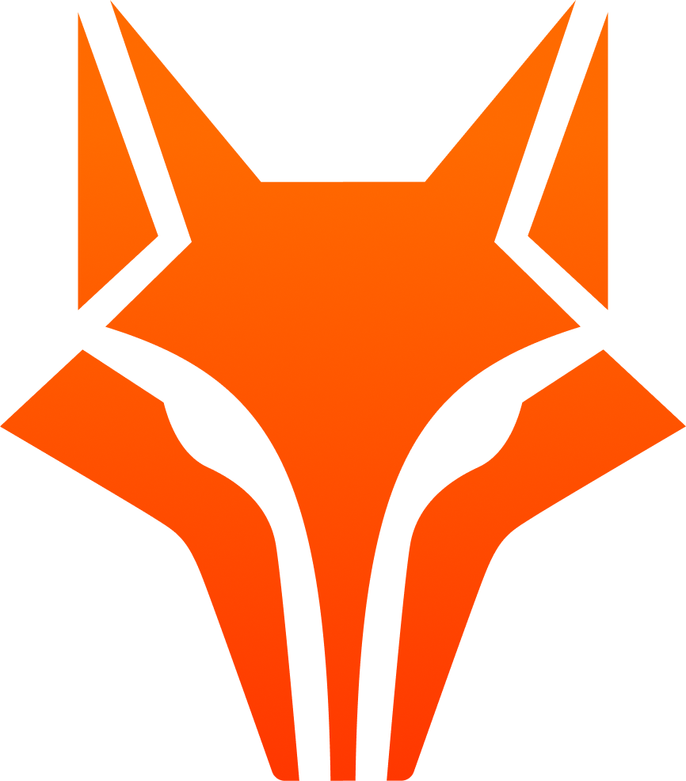

FIT 2026
Inteligência Artificial: suas Aplicações e Desafios

Contagem Regressiva
O maior evento universitário de tecnologia do Sertão de Crateús está chegando
Programação
Explore a agenda completa do FIT 2026, com palestras, workshops e atividades práticas sobre Inteligência Artificial. 04 a 08 de Outubro.
Palestrantes
Conheça os especialistas que compartilharão seus conhecimentos no FIT 2026.
A definir
Palestrante
IA Generativa e o Futuro do Trabalho
A definir
Palestrante
Desafios Éticos da IA
A definir
Instrutor
Machine Learning com Python
A definir
Instrutor
Visão Computacional
Patrocinadores
Agradecemos aos nossos patrocinadores que tornam o FIT 2026 possível.
Diamante
Prata
Apoio de Mídia
Sobre o FIT 2026
O Fórum de Inovação e Tecnologia (FIT) do Campus da UFC em Crateús, maior evento universitário de tecnologia do Sertão de Crateús, traz uma programação de palestras, workshops e amostras tecnológicas que lançam um olhar em toda essa revolução.
Em sua 13ª edição, o FIT 2026 tem como tema "Inteligência Artificial: suas Aplicações e Desafios", explorando como a IA está transformando diversos setores, desde a educação até o cotidiano das pessoas.
Edições Anteriores
Edição
Realização
Conheça as equipes que tornam o FIT 2026 realidade.